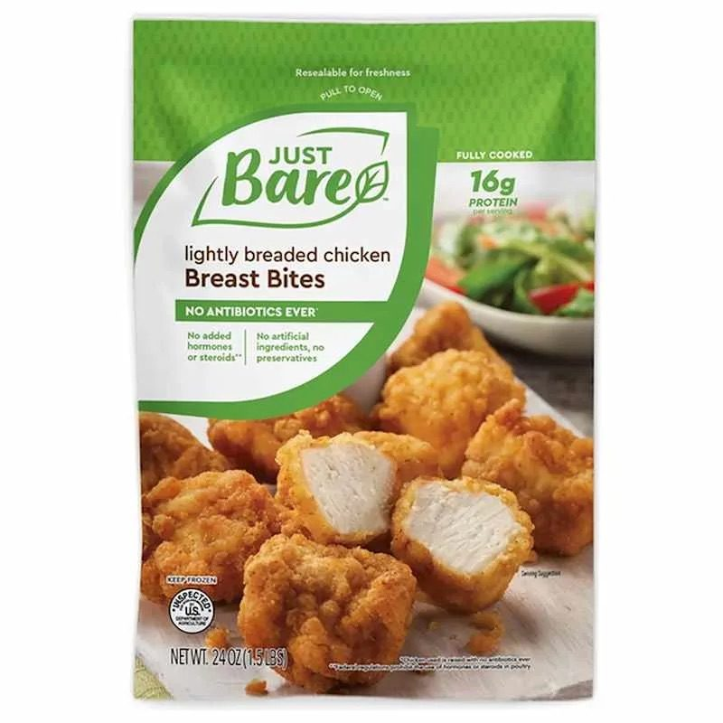
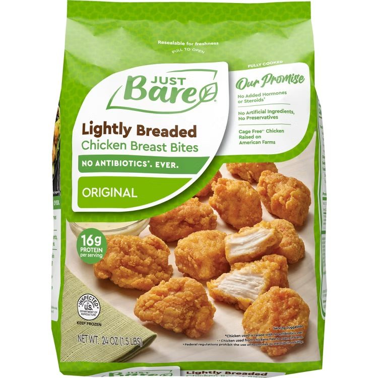

Just Bare Brand Director Q1 2025
A portfolio that reads as a portfolio.
Just Bare sells on clean claims and whole muscle chicken. Its frozen line named itself a different way on every bag, so shoppers could not build a mental model of the range. I rebuilt the naming architecture, the claim hierarchy and the food photography around what this buyer actually screens for.
virtual shelf test
virtual shelf test
applied portfolio-wide
Concept designs tested by an independent third party on virtual shelves before launch. Results are portfolio-level.
Frozen chicken is bought on autopilot. The bag is the only media most buyers ever see.
Just Bare had a real point of difference and a portfolio that did not say so consistently. I rebuilt the naming system first, then the claim hierarchy, then the photography.
Ethnographic work on the category found that the vast majority of purchase is made on auto-pilot, that frozen chicken is easily overlooked in store, and that without active work to drive visibility at retail, shoppers default to the incumbent.
Qualitative shopper study, August 2024
Over 70% of shoppers write or say only “chicken” or the type of chicken when they plan a trip. They arrive at the freezer door with a form in mind and no brand attached to it. Shoppers are twice as likely to learn about a new frozen product in the aisle than from any advertising. FR
So the front panel has one job. It has to be found by someone hunting a form, and it has to answer the two or three questions that decide the purchase before the door closes. Everything below follows from that.
Just Bare buyers shop by form and buy on clean claims. The old pack led with neither.
Three data points reframed the brief. This is not a shopper who buys chicken and then checks the label. This is a shopper who buys the label.
One naming architecture across the whole portfolio.
Findability was the primary objective, so the fix started with words, not layout.
Why this order. Pillar answers how it is made, which is where the premium sits. Form is the word the shopper is actually hunting, so it gets the largest type and a fixed position on every bag. Flavor is the last decision and reads last. Fixed order, fixed weight, fixed placement across every SKU. A shopper who learns one bag can read the whole line, and a buyer reviewing a line review deck can see the range in one glance instead of a set of one-off names.
Before this, each SKU named itself. Some led with the preparation, some led with the cut, some carried a flavor and some did not. The line had no grammar, so it did not read as a line. Findability is not only a design problem. It is a naming problem first.
What changed on the front panel, and why.

- Logo set small inside a green swash that takes a third of the panel.
- Product name reads as two unrelated lines of copy at two different weights.
- “No antibiotics ever” sits at caption size below the name.
- Clean claims split into two grey columns of fine print.
- Protein claim tucked at the top right against a salad bowl.
- Photography shows a loose pile with a bowl of salad competing for attention.

- Logo enlarged. The brand name is the claim, so it is sized like one.
- Pillar, Form and Flavor stack in fixed order and fixed weight.
- “No Antibiotics. Ever.” scaled up and given its own rule.
- “Our Promise” flag groups the clean claims so they read as one guarantee.
- 16g protein held at a fixed spot in the claim block.
- New photography leads with cut-through whole muscle chicken on a clean ground.
Left: prior production art. Right: the redesigned front panel that went to virtual shelf test and to market in Q1 2025.
| The change | The evidence behind it | Intended commercial effect |
|---|---|---|
| Enlarged the logo | Brand reputation is extremely or very important to 78% of Just Bare buyers against 58% of the category. FR | The brand name is the shorthand for the whole promise. Making it the first thing read shortens the time to recognition at the door. |
| Fixed the naming architecture to Pillar, Form, Flavor | Form ranks second of ten purchase attributes for Just Bare buyers. Over 70% of shoppers plan the trip by form, not brand. FR | Puts the hunted word in the same place on every bag. Findability at the door, and a line that reads as a line in a retailer review. |
| Scaled “No Antibiotics. Ever.” | 59% of Just Bare buyers call it a must-have against 39% of the category. The widest claim gap in the data set. CL | Moves the point of difference from fine print to a shelf-legible claim, which is the argument for the price gap versus the incumbent. |
| Grouped clean claims into an “Our Promise” flag | No hormones or steroids 59%, no artificial ingredients or preservatives 47%, all natural 37%. Organic sits at 31% and gluten free at 33%, so certification is not the driver. CL | One guarantee read in one pass beats five claims read in none. Removes the claims that were not earning their space. |
| Elevated the protein claim | High protein is the top claim in frozen fully cooked chicken at 47% must-have, 51% among Just Bare buyers and 62% among Protein Seekers. CL | Gets credit for a number the product already delivers. Protein is the reason this shopper is in the freezer aisle instead of the deli. |
| Rebriefed the food photography | The differentiator is whole muscle chicken, not formed chicken. Adjacent brand testing showed roughly half of shoppers thought the pack looked more appealing than the food inside. BB | Shows the cut-through so the premium is visible before purchase, and closes the gap between the promise on the bag and the product in the bag, which is what protects repeat. |
Third-party tested before launch, not after.
Portfolio-level results from independent virtual shelf testing on the concept designs. Launched Q1 2025.
- 01
Concept designs went to virtual shelf testing
Independent third-party test on virtual shelves rather than in isolation, so the design competed against the real set it would sit in.
- 02
Findability improved 83%
The primary objective. Shoppers found the product faster in a competitive frozen set.
- 03
Velocity improved 7%
The commercial read. Findability converted into units moved, which is the only test the naming architecture had to pass.
- 04
Built an expedited cross-functional timeline
Design, R&D, packaging engineering, sales and supply were sequenced to hit a Q1 2025 launch without stranding old inventory.
- 05
Presented launch conditions to leadership
The go decision was framed around tested findability and velocity, not around design preference.
What I owned.
Read the research, set the design brief, and decided which claims earned front-panel space and which did not.
Built the Pillar, Form, Flavor system and applied it across the portfolio.
Directed execution, ran the rounds, and approved final art.
Wrote the photography brief, directed the shoot against the differentiator, and approved the final selects.
Built the cross-functional timeline and presented launch conditions to leadership.